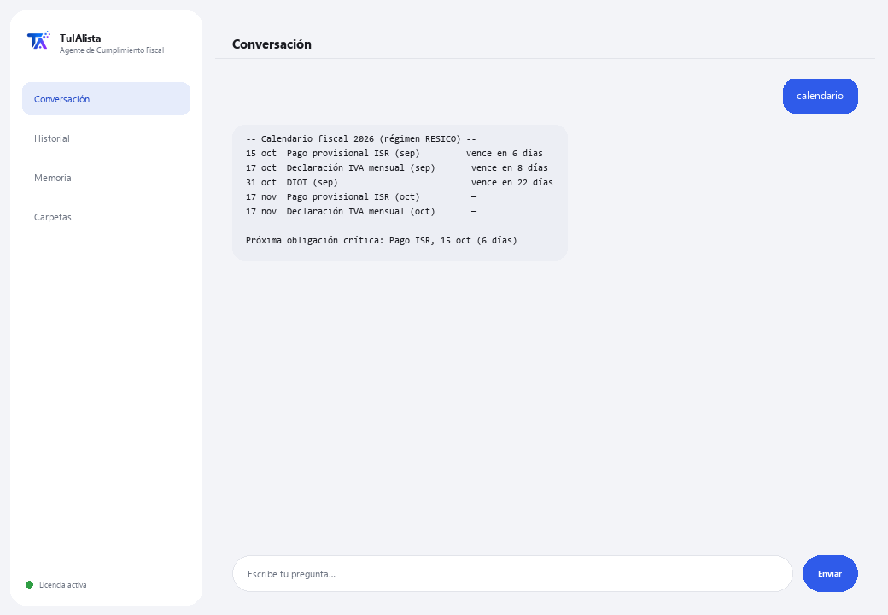

Agente de Cumplimiento Fiscal
Organiza tus documentos fiscales, arma tu calendario de obligaciones y te avisa antes de cada fecha límite del SAT.
¿Qué resuelve y qué necesitas?
Perder una fecha del SAT cuesta multas y recargos. Este agente convierte la carpeta donde guardas tus documentos fiscales (facturas, declaraciones, constancias, XML de CFDI) en un panel de cumplimiento: te dice qué vence pronto, qué podría faltar y qué gastos podrían ser deducibles — todo calculado en tu propio equipo.
- Necesitas: tu clave de licencia (TIA-XXXX-XXXX-XXXX-XXXX) y la carpeta con tus documentos. Nada de Python ni conocimientos técnicos.
- Primer resultado en menos de 5 minutos: instalas, activas, eliges tu carpeta y corres calendario para ver tus obligaciones del año.
- Tus documentos fiscales nunca salen de tu computadora — el análisis corre localmente.
soporte@tuialista.com o entra a tuialista.com/soporte — normalmente respondemos el mismo día hábil.1 Qué hace este agente
Tú le señalas la carpeta con tus documentos fiscales y él:
- Los indexa (PDF, Word, Excel, CSV, TXT, XML de CFDI, incluso en subcarpetas) y extrae los datos clave: RFC, régimen, periodos, tipo de documento, IVA, ISR, retenciones, total y fechas.
- Arma un calendario de obligaciones del ejercicio con las fechas límite típicas según tu régimen detectado.
- Te avisa de las obligaciones próximas a vencer (y las recién vencidas).
- Detecta posibles deducciones mencionadas en tus documentos.
- Detecta documentos o meses que podrían faltar en tu expediente.
- Genera un resumen fiscal ejecutivo del periodo, con recomendaciones.
- Responde preguntas libres sobre tu situación fiscal, en tu propio idioma.
El resultado: llegas a cada fecha del SAT organizado y sin sorpresas — sin tener que abrir cada archivo uno por uno para saber dónde estás parado.
2 Instalación (2 minutos)
Para Windows. No hace falta internet permanente ni subir nada a la nube.
Baja el instalador desde tuialista.com/descargar (agente Fiscal) y ábrelo. Crea un acceso directo en tu escritorio con el logo — no requiere Python ni terminal.
Doble clic al ícono nuevo. Pega tu clave de licencia (te llegó por correo al comprar) y pulsa Activar. Verás una palomita verde cuando sea válida.
Selecciona la carpeta con tus documentos fiscales y pulsa Comenzar a usar el agente. La próxima vez que lo abras, arranca directo — recuerda tu clave y tu carpeta.
3 Cómo usarlo
El agente abre una ventana de chat, como una app de mensajería — no es una pantalla negra de programador. Escribes tu comando o tu pregunta en el cuadro de texto de abajo, pulsas Enviar (o Enter), y la respuesta aparece como un mensaje, igual que en esta imagen real:

Los comandos siguientes son las palabras que puedes escribir en ese mismo cuadro de texto:
> calendarioTus obligaciones del año: pagos provisionales de ISR, IVA mensual, DIOT y declaración anual, con fechas límite típicas según tu régimen.
> obligaciones [días]Lo que vence pronto — por defecto los próximos 30 días, incluidas las recién vencidas, ordenadas por urgencia. Ej.: obligaciones 15.
> deduccionesDetecta menciones de gastos potencialmente deducibles (renta, honorarios, gasolina, software, IMSS...) y en qué archivos aparecen.
> faltantesMeses del ejercicio sin comprobantes y tipos de documento esperados que no se encontraron.
> resumenResumen fiscal ejecutivo: situación general, documentación disponible, obligaciones críticas, posibles deducciones y recomendaciones.
> analizar <archivo>RFC, tipo, régimen, periodos, IVA, ISR, retenciones, total y fechas extraídos de un documento concreto. Ej.: analizar declaracion_mayo.pdf.
> ¿pregunta libre?Puedes escribir cualquier duda en lenguaje natural, ej.: ¿qué obligaciones tengo si soy RESICO?
> salirTermina la sesión (también funciona exit).
4 Ejemplos de uso común
Preparar el mes
obligaciones 30 → faltantes
Revisar deducciones antes de la declaración anual
deducciones → resumen
Ver el calendario completo del año
calendario
Una duda puntual
¿cuándo vence mi declaración anual como persona física?
5 Preguntas frecuentes
¿Mis documentos fiscales se suben a internet?
¿Qué formatos acepta?
¿Las fechas del calendario son oficiales?
¿Esto sustituye a mi contador?
¿Cómo sabe mi régimen?
¿Las deducciones que detecta son deducibles con seguridad?
¿Los montos de IVA/ISR que extrae son exactos?
¿Lee un PDF escaneado?
¿En qué idioma responde?
¿Modifica mis documentos?
6 Solución de problemas
No lee un .pdf, .docx o .xlsx
Muestra “0 documentos indexados”
No detecta mi RFC o régimen
Dice “Licencia no válida” o pide reconectar
“No hay proveedores de IA configurados”
¿Ninguna de estas soluciones resolvió tu problema? Escríbenos directamente — con gusto lo revisamos contigo.
soporte@tuialista.com o entra a tuialista.com/soporte — normalmente respondemos el mismo día hábil.7 Privacidad y confidencialidad
Tus documentos fiscales nunca salen de tu computadora.
- El agente lee, indexa y extrae datos localmente, en tu propio equipo. No sube tus documentos a ningún servidor ni al SAT.
- El calendario, las obligaciones, las deducciones, los faltantes y el análisis de documentos se calculan en tu máquina.
- Lo único que viaja por internet es: (1) una comprobación de que tu licencia está activa — que no incluye tus documentos —, y (2) al usar resumen o hacer una pregunta libre, se envía un fragmento de la información relevante al motor de IA para redactar esa respuesta.